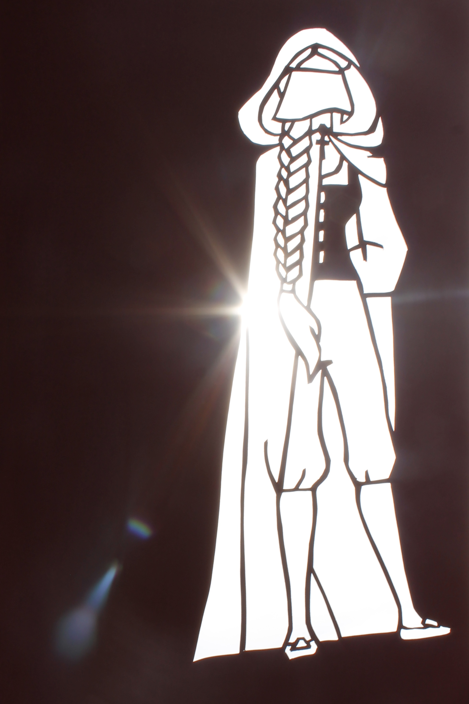

Zu den Themen Märchenheldinnen und Kindheitshelden sind Scherenschritte aus farbigem Karton entstanden, von denen auch die Negative verwendet wurden um etwas Neues zu kreieren.
Rapunzel I, Farbkarton, 2017

Siebenschön I, Farbkarton, 2017Brüderchen und Schwesterchen II, Farbkarton auf Papier, 2017Die kluge Bauerntochter II, Farbkarton auf Papier, 2017Pippi Langstrumpf, Farbkarton auf Papier, 2015Harry Potter, Farbkarton auf Papier, 2015Tim und Struppi, Farbkarton auf Papier, 2015
Zuhause
Inspiriert durch das Bild Empire of the Light von Rene Magritte malte ich ein Acylbild von dem Haus, in dem ich aufgewachsen bin.